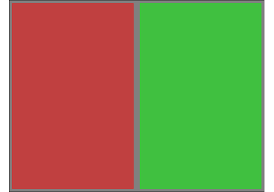
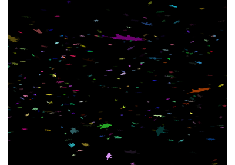
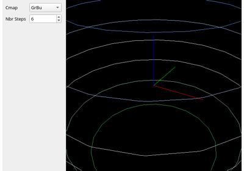

Scene#
More example scripts are available in the VisPy repository’s example scripts directory.

Demonstration of borders and background colors

Instanced rendering of arbitrarily transformed meshes

Custom Visual for instanced rendering of a colored quad

Isocurve for Triangular Mesh with Qt Interface
Grid Layouts#
Examples of using the GridWidget to layout elements in a SceneCanvas.
Realtime Data Tutorial#
Examples that progressively build a Qt-based visualization application with updating data. The data in this tutorial is artificial, but is created and used in a way resembling real world data streams. In early examples data is created in the main GUI thread, but creation is later moved to an external thread to promote better responsiveness from the GUI.
Each example is a self-contained working application in some sense and can be used as a reference for the particular feature it is demonstrating. However, each example builds on the example before it so features and vispy application best practices are improved at the cost of more complex code.
Lastly, these examples use PySide2, but the application structure and demonstrated concepts should apply and be transferable to other backends (especially the Qt ones) with only a few exceptions. At the time of writing PySide2 is the newest version of PySide available through conda-forge conda channels. If/when PySide6 is available, pull requests to update these examples would be welcome. ;)
Update data using timer-based events
Update data using a loop in a background thread
Update data using timer events in a background thread